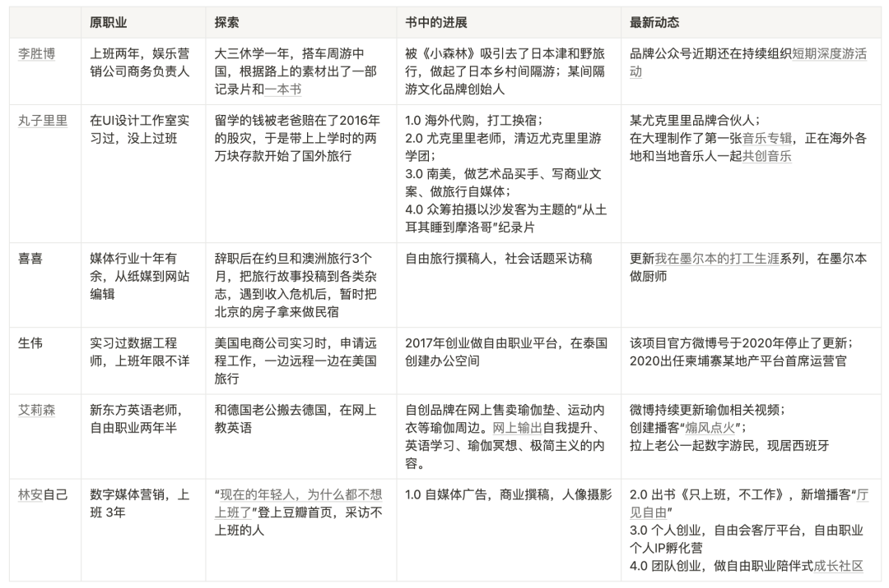

Digital Nomads in “All Work, No Work”
Contents
“ Why don’t today’s young people want to go to work ?” In February 2018, after watching an episode of “Round Table Party” titled “How to break up if you don’t want to go to work”, Lin An, an office worker who works in digital media marketing, wrote this text on Douban.
She continued her off-duty interviews with several friends who were not working, and began the interview project “100 People Not Working.” Through the popularity of this topic, Lin An received many invitations from media and magazines, as well as opportunities for business cooperation, which gave her the confidence to support herself through writing. At the same time, in order to prevent the instability of her early income from writing work, she tried to turn her photography hobby into a means of making a living by paying for photo shoots. Finally, in the summer of 2018, she resigned. In the second month after her resignation, her monthly income exceeded her working salary for the first time.
In a blink of an eye, Lin An has entered her 6th year of freelancing. Through exploration, transformation, and light entrepreneurship, she is now working full-time as a freelance community “Freedom Living Room” and has her own entrepreneurial team.
The book “Only Working, Not Going to Work” was published in September 2019. It contains the stories of 20 people who don’t work in “100 People Who Don’t Work”, and of course Lin An’s own story. In this article, I will share the stories of several of my fellow digital nomads.

1 Li Shengbo
Original occupation : Worked for two years, business manager of an entertainment marketing company
Exploration : I took a year off from my junior year and traveled around China by car. I published a documentary and a book based on the material on the road.
Progress in the book : I was attracted by “Little Forest” and traveled to Tsuwano, Japan, and started a distance tour in the Japanese countryside; founder of a certain distance travel cultural brand
Latest news : The brand’s public account has continued to organize short-term in-depth tour activities recently.
2 meatballs
Original occupation : Interned in a UI design studio, never worked in class
Explore : My father lost all my money for studying abroad in the 2016 stock market crash, so I took my 20,000 yuan savings from school and started traveling abroad.
Progress in the book : 1.0 Overseas purchasing agent, working in exchange for accommodation; 2.0 Ukulele teacher, Chiang Mai ukulele study tour group; 3.0 South America, working as an art buyer, writing business copy, and doing travel self-media; 4.0 Crowdfunding Filming the documentary “Sleeping from Turkey to Morocco” with the theme of couchsurfing
Latest news : Partner of a certain ukulele brand; produced the first music album in Dali, and is co-creating music with local musicians overseas
3 hi hi
Original occupation : More than ten years in the media industry, from print media to website editor
Explore : After resigning, I traveled to Jordan and Australia for 3 months. I submitted my travel stories to various magazines. After encountering an income crisis, I temporarily used my house in Beijing as a B&B.
Progress in the book : Freelance travel writer, interviews on social topics
Latest news : Update on my working life series in Melbourne , working as a chef in Melbourne
4 Shengwei
Original occupation: Interned as a data engineer, working experience is unknown
Explore : When interning at an American e-commerce company, apply for a remote job and travel in the United States while working remotely
Progress in the book : Starting a freelancing platform in 2017 and creating an office space in Thailand
Latest news : The official Weibo account of the project stopped updating in 2020; in 2020, he served as the chief operating officer of a real estate platform in Cambodia
5 Alison
Original occupation : New Oriental English teacher, freelancing for two and a half years
Explore : Move to Germany with my German husband and teach English online
Progress in the book : Self-created brands sell yoga mats, sports bras and other yoga peripherals online. Online output of content on self-improvement, English learning, yoga meditation, and minimalism.
Latest news : Weibo continues to update yoga-related videos; creates a podcast to “ fan the flames ”; brings her husband along as a digital nomad and now lives in Spain
6 Lin An himself
Original occupation : Digital media marketing, worked for 3 years
Explore : " Why don’t today’s young people want to go to work? " appeared on the homepage of Douban, interviewing people who don’t work.
Progress in the book : 1.0 self-media advertising, business writing, portrait photography
Latest news : 2.0 Published the book “Only Work, Not Working”, added the new podcast " Freedom in the Hall “; 3.0 Personal entrepreneurship, free living room platform, freelance personal IP incubation camp; 4.0 Team entrepreneurship, a companion growth community for freelancers
Of course, there is no lack of anxiety in the life of a digital nomad. Lin An said, “When you become a freelancer, anxiety becomes your good friend. The best way to relieve anxiety is to do things. You must not get depressed when you are anxious.” Xixi is an easy person. Anxious digital nomad: “When the editor doesn’t contact me for a while, I start to panic and wonder if I have been left out.” I am afraid that the editor will forget about her or be replaced by another author. But she has a way out. She owns a house in Beijing. If she can’t continue her freelance career, she can still collect rent to live on. At the end of Xixi’s story, Lin An reminds those who want to stop working that fate has set a limit for us and we must respect reality.
Lin An is worried that young people only see the bright side of freelancing and resign without any preparation, leaving themselves in a bad situation. When she resigned in 2018, she prepared enough savings to enable her to live in Shanghai for two years without any income without starving to death. She also set a goal of achieving balance in the first three months and achieving the income level at work in the next three months. .
But maybe, when you still have no direction in your heart, taking 20,000 yuan and bravely exploring yourself and the world like Wanzi Lili is also an option. As Alison said, “No matter where you are at the end of the road, you will never starve to death. There is always a way.” The external environment will subtly affect a person’s status and goals. When Alison, who is not anxious, returns home and spends time with her friends, When we were together, not only did she find that her rich friend was also very anxious, but she also spent more time worrying about the future. “But when I left that environment and was with digital nomads, the confidence and encouragement this group of people gave each other made me feel that what I was doing could be recognized, and I became more confident and calm.”
Should we make sufficient preparations before taking action, or should we take action first and constantly adjust our goals during the action? This is not a question of who is right or wrong, nor is it a black and white choice, but the degree of personality tendency. The fourth dimension in the MBTI personality test is to distinguish your working style. Are you Judging or Perception? People with Judging tendency pay attention to the accuracy of decision-making and evaluation, prefer to use logic and evidence to support, and are willing to fill their travel schedule before traveling; People with awareness tendency P value flexibility and adaptability, seek more new ideas and real experiences, and are willing to explore a new travel destination with the unknown.
In this journey of life, there are no standard answers. As Wan Zili mentioned, “Life is not a track, but a wilderness.” May you have fun in your own wilderness, live your life to the fullest, and live up to your expectations.
Although riding in the car has become a daily routine when I grow up, I still miss that movable window. I want to install a movable window in my future home. Outside the window, there are grasslands, forests, deserts, and wilderness. , rather than orbit.
——Wanzi Lili’s " Fragments of Thoughts in the Memo "
Author Harold Gao
LastMod Sep 23, 2023